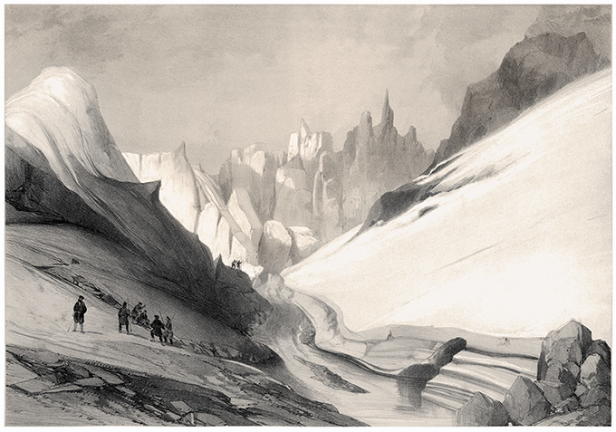

The Cold Land
Summers are a warm and happy time, but the fear of the winter returning always lies on the back of one's mind. Come winter, being on the surface means death. Bare fingers freeze in moments; the breath forms daggers in the air; the howling winds strip the land bare of trees, and all plants also sleep underground through the long months.
The Deep Towns
Tunnels underground: large, complex, going back centuries if not millenia. Geothermic heat keeps them livable, and provides hot but foul-tasting water. Years of food stores, carefully guarded, hide there. Ration lamplight, learnt o see in the dark. Tell stories, sing songs. Patrol the deeps for the creatures that come from the heat.
But sometimes the chimneys that pull in air need to be unplugged, or a tunnel caves in and another route needs to be found, or a store of food is ruined and they have to find something on the surface before they all starve. Or a beast of the surface, drawn by the heat, is attacking the settlement.
They have carts that travel slowly during lulls in the storm, carts that are completely sealed and propelled from inside. They can keep going for even a full day, more if you are willing to risk not returning. And with the proper gear it's possible to survive outside for even an hour or two. There are old treaties, of defense and of aid, to call upon. Though how good is an oath, even one signed in blood, in the face of the howling storm?
And sometimes something immense comes from the deep. Once a generation, once a few generations. More a force of nature than a beast, made of fire and stone. You pick up your weapons and hope to save the city with no hope of return.
A hero is one who risks death so the rest may survive. You may die, but the community grows stronger.
The Surface Dwellers
They have learned the secret of torpor, with herbs gathered in summer and meditation. One stays awake for weeks, keeping the rest asleep, then every few weeks there's a lull in the storm and a flurry of activity: make it to the next cache, secure the furs over the pit, gorge yourself, draw straws for who stays awake next. Or, if you are lucky, and a great wild beast is nearby, take it down and gain a buffer against a winter that lasts weeks or months longer than expected.
They draw straws when they need a leader; they draw straws when they don't have enough food. Children always eat first.
In the summer they raid the Deep Ones, but in the winter the laws of the Winter Peace extend even to them. And there is trade too, and peace on market days. They hunt the great shaggy beasts of the summer, and work their pelts without seams.
They remember entire cities in the deeps devoured by the great beasts. It is, at best, foolish to winter underground.
They whisper of how thsoe in the cities feed the beasts of the earth's fires to keep them sated and sleeping. The ways of the city are evil, they say.
The Mechanical Cities
A myth, a rumour, a trick of the light? Great mechanical cities, with legs like spiders or crabs, it is said, stride across the land. In the winter, a small dim sun grows food even in the endless darkness. What powers them? Are they the reason that mountains go dead, their cities full of corpses? And if they come to you in the dead of winter, in your last few breaths, who could say no to whatever they ask of you?
Systems
Probably some sort of Forged in the Dark game?
Why this now
A nice seasonal game for the cold time of year. Also, I've been doing a lot of environmental activism, and there's something cathartic about imagining a world where we are powerless in the face of nature, rather than being powerless in the face of other humans destroying it.
Anyway, ride the bus, support your local public transit. The first verison of this blog post was written in my head with rough notes on my phone, on the bus.